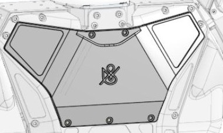
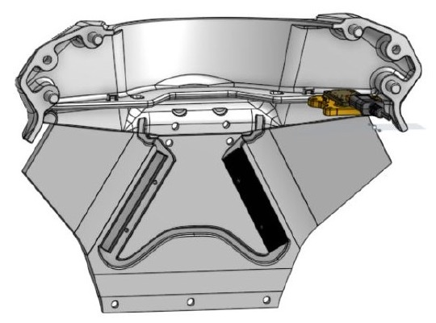
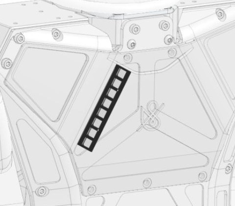

Telling you what it is doing
A humanoid prototype is an opaque thing to stand next to. It is not obvious from the outside whether it is powered, idle, running, or waiting on something, and anyone sharing a room with it has a reasonable interest in knowing which. I was asked to put that state somewhere a person reads without being told to, so it went on the chest — roughly eye height, facing whoever is in front of it.
I had to work inside an existing machine rather than bolt a box onto it. My part was the pair of plates: I modelled each one in CAD along with its diffuser, its LEDs and the controller it carries, and they had to come off the robot as easily as they went on. The chest assembly behind them and the machine they bolt onto were not mine.
Two strips and a controller
I specified and sourced the electronics rather than designing a board: two Adafruit LED strips, one behind each plate's window, driven by a small Adafruit controller running Python. The robot sends the controller a command that selects a mode, and the colour and the pattern for that mode are worked out on the controller itself.
I would defend that split in an interview. The robot does not have to know what any state looks like in RGB, and I did not have to touch robot software to change one — it is a mode name on one side of the wire and a small Python file on the other.
- EmittersAdafruit RGB LED strips, one behind the window in each plate.
- ControllerA small Adafruit board running Python, holding the status logic itself.
- InterfaceOne command in, selecting a mode; colour and pattern resolved on the board.
- DiffuserPrinted in house, thin walled, to spread the strip across the whole window.
- PackagingA recessed channel up each plate's inner face locates its strip; the connector routes along the top edge, clear of the window.
- MountingMagnets holding the plates on, so they come off for service without tools.

Printing the light
A bare strip behind a window reads as a row of bright dots, not as a lit panel, which looks like a fault rather than a signal. So I printed the diffuser in house: thin walls and tight clearances, thin enough to pass and scatter the light rather than block it, and tight enough that the part located itself in the channel instead of rattling around in it. Printing it is what made that iterable — the wall thickness is the variable that decides whether it reads as a panel, and I could change it and have the next one in my hand the same day.
I held each plate on with magnets, so it comes off the robot by hand. That was the point: the diffuser or the strip can be got at without tools and without taking the torso apart, which is the difference between a part that can be iterated on a working robot and one that cannot.

Where it ended up
The system shipped on the prototype, and the robot carrying it was later covered by Bloomberg in early reporting on humanoid robots. I can point at the indicator on the chest in that footage.
I should be straight about the size of this one. It is a pair of plates: a focused piece of hardware and software integration inside a much larger machine, not a robot I built and not the chest they sit in. What I think it is good evidence of is a part taken from CAD through printed prototypes to something that shipped on a robot — choosing and sourcing the electronics, packaging them inside plates I had modelled around them, and making the mechanical side, the firmware and what the robot sends down the wire all agree on the same thing.